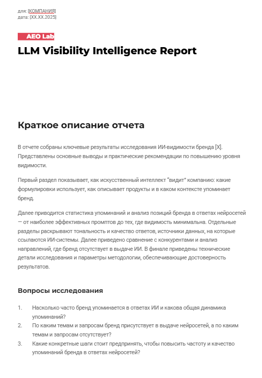
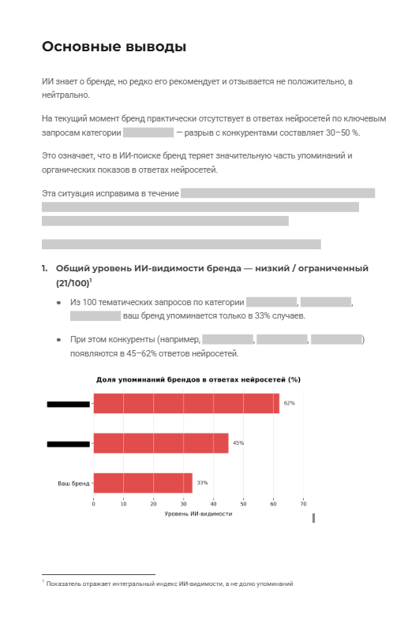
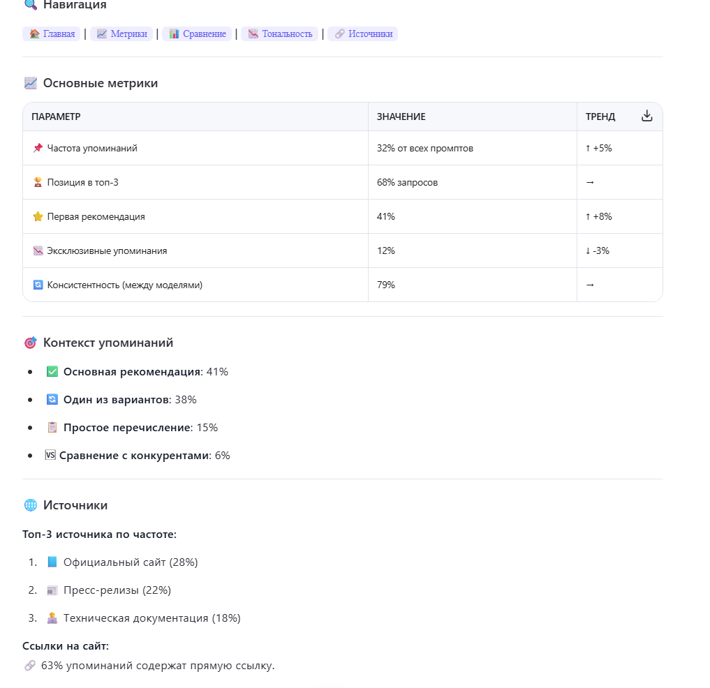
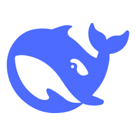
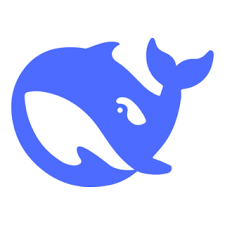

Увеличьте ваш трафик из ChatGPT в 10 раз
Превратите упоминания вашего бренда в ChatGPT, YandexGPT, DeepSeek, Perplexity и других нейросетях в трафик, лиды и продажи.
Напишите намНаши продукты и услуги
Анализ видимости в нейросетях


Первый шаг к управлению ИИ-видимостью – понять, где вы сейчас
Что делаем
- Моделируем запросы
- Подключаемся к ChatGPT, YandexGPT, DeepSeek, Perplexity по API
- Получаем точные данные о ваших позициях
Мониторинг
Живая карта изменений в ИИ-поиске
Что делаем
- Отслеживаем изменения в уровне ИИ-видимости
- Оцениваем влияние ваших действий на ваши позиции
Продвижение
 



Делаем так, чтобы нейросети вас рекомендовали
Что делаем
- Определяем наиболее эффективные конкретные действия, которые дадут результат
- Сопровождаем: помогаем со стратегией и контентом
FAQ
Generative Engine Optimization — новая и загадочная область. Мы проведём вас по ней.